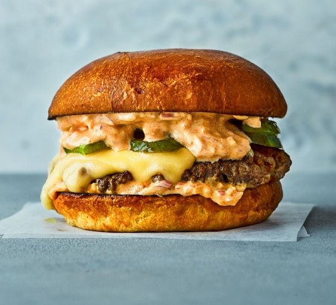

Cheese Burger

Description
A Simple to make yet delicious cheeseburger, satisfy your cravings with this recipe!
Ingredients
- 4 halved brioche burger buns
- 2 melted tbsp unsalted butter
- 600g minced beef (15% fat)
- 4 cheese slices
- 10 sliced pickles, cut into pieces
Steps
- To make the sauce, combine all the ingredients in a bowl with a little seasoning
- Heat a large non-stick frying pan over a medium heat and brush the cut sides of the buns liberally with melted butter
- Toast in the hot pan until really golden and toasted
- Turn the heat to high. When the pan is really hot, season the mince and form into four balls, then push two into the frying pan, squashing to flatten
- Sprinkle over some salt again and cook for 2 minutes until really crisp, then flip, sprinkle over some salt and repeat.
- Lay a sheet of cheese onto each and cover with a lid for 30 seconds until melted
- Move onto a plate and repeat with the remaining patties and cheese slices
- Spread some of the sauce onto the bases of the buns, then top with the cheese patties
- Top with lots of pickles, then spread the tops liberally with the sauce and put on top to serve